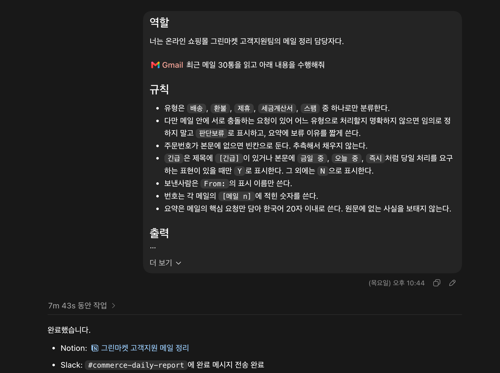
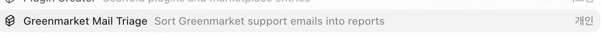
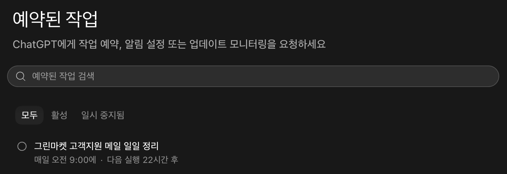
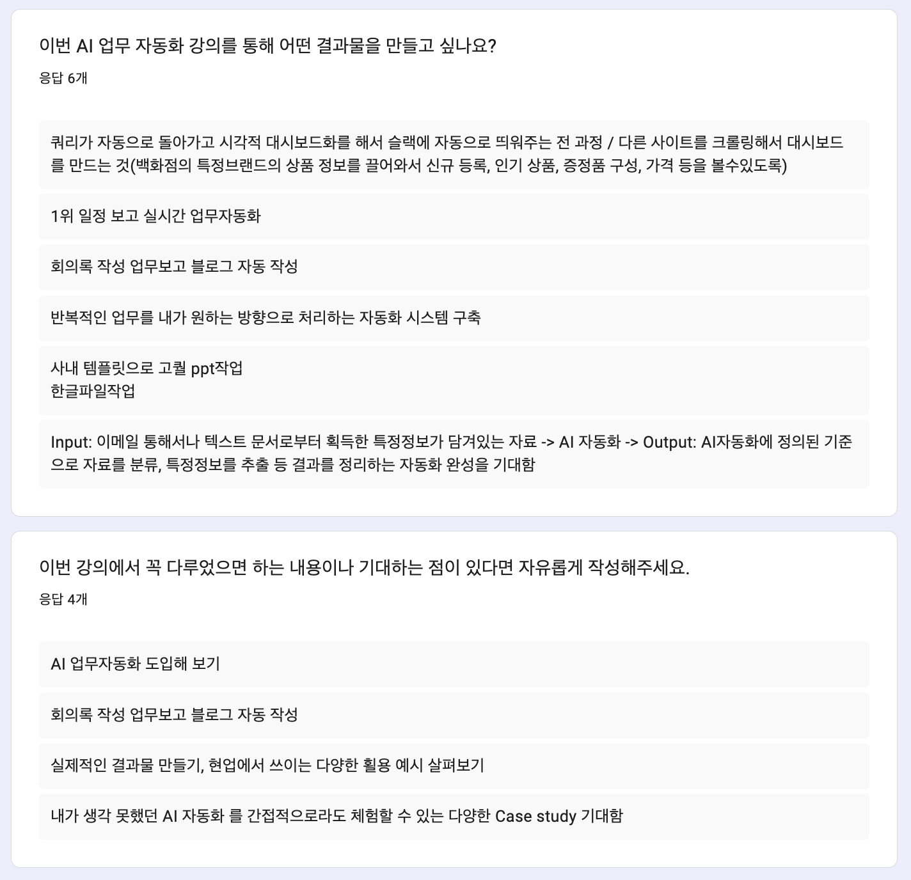

정규 2회차
실습으로 익히는
AI 업무 자동화
설명이 아닌 케이스 중심
1회차 개념 위에서 실제 업무 자동화 실습
강의자 · 다니엘
설명이 아닌 케이스 중심
1회차 개념 위에서 실제 업무 자동화 실습
강의자 · 다니엘
도구 준비 → AI 개념 → 지형도 → 지시서 → 이메일 케이스 → 마무리
AI ⊃ 머신러닝 ⊃ 딥러닝 ⊃ 생성형 AI ⊃ LLM
챗봇 vs 에이전트 — 챗봇 = 답변 / 에이전트 = 완료
같은 LLM + 도구 + 반복 루프
| 도구 | 닿는 범위 | 용도 |
|---|---|---|
| ① 웹 챗봇 ChatGPT · Claude 웹 |
대화창 + 플러그인(MCP) 연결 서비스 | 질문 · 초안 · 플러그인 업무 자동화 — 1회차 실습 |
| ② Cowork · Agent 터미널 없는 에이전트 |
지정한 내 폴더 | 채팅 UI 선호 시 · 가벼운 파일 작업 위임 |
| ③ CLI 에이전트 Claude Code · Codex |
컴퓨터 전체 + 실행 + 연결 | 반복 업무 자동화 — 본 수업의 주력 도구 |
선택 기준 — 도구의 우열이 아니라 일의 크기에 맞는 선택
1회차 = ① 웹 + 플러그인으로 자동화 완주
여섯 칸 작성 = 지시서 완성
원칙 — 명확성 · 예시 · 모르면 보류 · 완료 조건은 숫자
오늘 — 케이스마다 지시서 먼저 작성 → 에이전트에 투입
[역할] 너는 무엇을 하는 사람인가 [목표] 무엇을 만들어야 끝인가 [입력] 무엇을 읽는가 [규칙] 무엇을 하면 안 되는가 [출력] 어떤 형식으로 남기는가 [검수] 맞는지 어떻게 확인하는가 # 금지어 ───────────── # 알아서 · 적절히 · 잘 # 보기 좋게 · 센스있게
핵심 — 코드 · 터미널 없이 ChatGPT Web(App) UI 안에서 전 과정 완료
필요한 것 = 플러그인 연결 + 지시서 한 장

[역할] 너는 온라인 쇼핑몰 그린마켓 고객지원팀의 메일 정리 담당자다. [입력] Gmail 최근 메일 30통을 읽고 아래 내용을 수행해줘. [규칙] - 유형은 배송, 환불, 제휴, 세금계산서, 스팸 중 하나로만 분류한다. - 메일 안에 서로 충돌하는 요청이 있어 어느 유형으로 처리할지 명확하지 않으면 임의로 정하지 말고 판단보류로 표시하고, 요약에 보류 이유를 짧게 쓴다. - 주문번호가 본문에 없으면 빈칸으로 둔다. 추측해서 채우지 않는다. - 긴급은 제목에 [긴급]이 있거나 본문에 '금일 중', '오늘 중', '즉시'처럼 당일 처리를 요구하는 표현이 있을 때만 Y로 표시한다. 그 외에는 N으로 표시한다. - 보낸사람은 From:의 표시 이름만 쓴다. - 번호는 각 메일의 [메일 n]에 적힌 숫자를 쓴다. - 요약은 메일의 핵심 요청만 담아 한국어 20자 이내로 쓴다. 원문에 없는 사실을 보태지 않는다.
그대로 복붙 — '그린마켓'을 회사 이름으로, 유형 5종을 우리 업무로만 바꾸면 바로 작동
[출력] 아래 형식의 Markdown 표로 정리해줘. | 번호 | 보낸사람 | 유형 | 긴급 | 주문번호 | 요약 | 표 아래에 유형별 건수, 총 건수, 주문번호가 빈칸인 메일 번호 목록을 적어줘. [검수] 표의 총 행 수가 읽은 메일 30통과 일치하는지, 유형별 건수의 합이 총 건수와 같은지 확인해줘. [연계 — Notion] "그린마켓 고객지원 메일 정리" 페이지에 위 표를 그대로 옮겨줘. 페이지 최상단에 총 건수 · 유형별 건수 · 주문번호 공란 목록을 요약해서 적어줘. [연계 — Slack] #commerce-daily-report 채널에 아래 형식으로 완료 메시지를 보내줘. "그린마켓 메일 정리 완료 — 총 30건(배송 n·환불 n·제휴 n·세금계산서 n·스팸 n·판단보류 n) / Notion 링크: [페이지명]"
포맷을 정해두는 이유 — Notion·Slack까지 형식을 고정하면 매번 같은 모양의 결과물이 재현된다
| 구분 | ChatGPT 플러그인 | MCP (Model Context Protocol) |
|---|---|---|
| 정체 | ChatGPT의 기능 이름 — 스킬 + 외부 연결 앱 묶음 | AI ↔ 외부 도구를 잇는 공개 표준 프로토콜 |
| 범위 | ChatGPT · Codex 안에서 사용 | 업계 공통 — Claude · Codex 등 도구 불문 |
| 비유 | 완제품 어댑터 | 규격 자체 — AI의 USB-C 포트 |
| 지난주 실습 | @gmail · @notion · @slack 플러그인 연결 |
그 실체 = 원격 MCP 서버 (openai-curated-remote) |
결론 — 플러그인 = MCP의 ChatGPT식 포장 → 한 번 이해하면 Claude Code 등 다른 도구에서도 동일 개념 재사용
지시서 + 플러그인 연계를 스킬 Greenmarket Mail Triage로 저장
이후 실행 = 스킬 호출 한 줄 — 줄글 재작성 불필요

효과 — 30통 분류 → Notion → Slack 전 과정이 호출 한 줄로 재실행
지시서 = 1회 자산 아닌 저장 · 재사용 자산

1회차 = Codex 앱 설치 후 수업 진행
지금부터 = ChatGPT 데스크톱 앱 하나에 Codex 포함 전체 기능 통합
Option + Space — 어디서든 즉시 질문오늘부터 — Codex 앱 따로 설치하지 말고 ChatGPT 앱 하나만 설치 · 기존 Codex 앱 사용자는 업데이트만 하면 앱 안에 Codex 그대로 포함
지금 설치 — chatgpt.com/download ↗| 구분 | Chat | Work | Codex |
|---|---|---|---|
| 정체 | 대화형 보조 | 업무 자동화 에이전트 | 코딩 에이전트 |
| 맡는 일 | 질문 · 초안 · 탐색 · 빠른 분석 | 연결된 앱·파일·브라우저에 걸친 장시간 작업 | 레포지토리 인식 구현 · diff · 테스트 · PR 리뷰 |
| 결과물 | 다음 작업의 출발점(답변) | 검토 가능한 문서 · 슬라이드 · 시트 · 웹앱 | 코드 변경(diff) · PR |
| 지난주 실습 | — | 이메일 자동화 케이스가 여기 | — |
흐름 — 자료 수집 · 탐색은 Chat → 여러 앱에 걸친 실행은 Work → 코드 구현은 Codex로 넘긴다
현장에서 답한 것 + 숙제로 남긴 것
같은 질문을 가진 분들을 위해 재정리
| 구분 | cmux | tmux |
|---|---|---|
| 정체 | macOS 전용 네이티브 앱(Ghostty 기반) | 터미널 멀티플렉서(CLI) |
| 방식 | GUI — 탭 · 분할창 · 내장 브라우저 · 알림 | 하나의 터미널 안에서 창 분할 · 다중 세션 관리 |
| 특화 용도 | AI 코딩 에이전트 병렬 실행 전담 | 범용 — 서버 · 로그 · SSH 세션 등 |
| 지원 OS | macOS만 | macOS · Linux 기본 지원 · Windows = WSL2 경유 |
결론 — Windows에는 cmux 미지원 · tmux + WSL2 조합으로 대체
왜 필요한가 — PowerShell은 Windows 명령어만 인식 · tmux는 그 자체로 실행 불가 → WSL2가 진짜 리눅스 환경을 통째로 추가해 해결
실질적 이점 — 가상머신 · 듀얼 부팅 없이 명령어 한 줄(wsl)로 리눅스 진입 · 다른 리눅스 개발 도구도 그대로 사용
wsl --install 입력 → 재시작sudo apt install tmux참고 아티클 — 위 단계를 화면과 함께 그대로 따라 할 수 있는 글
아티클 보기 — elancer.co.kr/blog/detail/1088 ↗커넥터 디렉터리 — 주로 Anthropic 파트너사(Google · Slack · Figma 등) 원격 서비스 위주 등록 · 오픈소스 HWP MCP는 스토어 검색 설치 불가
정리 — 지금 당장 Claude Web · App의 Cowork로는 사용 어려움 · Claude Code CLI 학습 이후 MCP를 직접 연결해 사용 가능 — 그때 설치·연동 방법 별도 안내 예정
오늘 이 세션처럼 — 사용자가 선택한 로컬 폴더를 입출력 위치로 쓰면 로컬 전용 모드 — PC를 켜둬야 함
참고 — Cowork 예약 작업 공식 문서
공식 문서 보기 ↗→ 엑셀 대시보드로 정리
특정 분야 기관·단체 세미나·포럼·행사 → 웹 조사 → 정기 보고
서류(논문 등)와 심사자 프로필 비교 → 적합 담당자 매칭
회의 메모 → 회의록 양식 정리 → 업무보고 재구성
주간 계획표 작성 · 일정 조율 · 메시지 확인 · 할 일 정리
여러 자료 취합 → 정해진 양식의 문서로 완성
메일함에 쌓이는 정보성 메일 분류 · 정리
메일 · 문서에서 필요한 정보만 추출 · 정리

업종도, 다루는 자료도 제각각
그런데 뜯어보면 거의 같은 순서로 움직임
그래서 — 여러분이 적어주신 자동화 요청, 대부분 이 네 단계 중 하나 이상에 해당
업종이 달라도 수집·분류·생성·배포라는 뼈대는 동일하게 반복됨
사람이 매번 새로 판단해야 할 것 같지만 실제로는 기준만 한 번 정하면 됨
도구(웹검색 · 파일읽기 · 문서생성)를 스스로 골라 네 단계를 대신 처리
오늘부터 — 이 네 단계를 실제 케이스로 직접 자동화
2회차부터 실습이 수업의 중심
매주 AI 업무 자동화 케이스 직접 실습 + 산출물 확보
듣고 가는 수업이 아니라,
만들고 가는 수업
| 구분 | ChatGPT Work | Claude Cowork |
|---|---|---|
| 정체 | 브라우저 기반 에이전트 — 가상 환경에서 웹사이트 탐색·양식 입력 | 데스크톱 기반 에이전트 — 내 파일시스템에 직접 접근 |
| 특화 워크플로우 | 웹 리서치 · 예약 · 여러 사이트 정보 수집 | 로컬 파일 작업 — 엑셀 분석 · 문서 작성 · 메일 초안 |
| 동시 처리 | 서브에이전트 병렬 실행 | Cowork 서브에이전트로 동일하게 병렬 처리 |
| 지난주 케이스 | Gmail → Notion → Slack 자동화 완주 | 같은 케이스, 동일하게 재현 가능 |
결론 — 세부 구현은 다르지만 큰 틀(에이전트가 여러 도구를 연결해 대신 실행)은 동일 · 지난주 배운 방식 그대로 적용 가능
| 개념 | ChatGPT 표현 | Claude 표현 |
|---|---|---|
| 실행 환경 이름 | Work — Chat·Work·Codex 중 한 모드 | Cowork — 독립된 앱/기능 |
| 외부 앱 연결 | 플러그인 | 커넥터(Connector) |
| 예약 반복 실행 | 예약된 작업(Scheduled tasks) | 예약 작업(Scheduled tasks) — 명칭 동일 |
| 동시 다중 처리 | 서브에이전트(Subagents) | Cowork 서브에이전트 |
| 재사용 저장 단위 | 스킬(Skill) | 스킬(Skill) · 플러그인(마켓플레이스 배포) |
정리 — 부르는 이름은 달라도 하는 일은 동일 · "플러그인"이 "커넥터"로, "모드 이름"이 "앱 이름"으로 바뀌었을 뿐
문서 · 메모 · 데이터베이스를 페이지 하나에 통합 관리하는 협업 워크스페이스
로컬 파일 대신 회의 메모 · 자동화 결과물을 저장하는 공간으로 사용
채널 기반으로 대화·파일을 주고받는 업무 메신저
자동화 완료 보고 · 알림을 전달받는 채널로 사용
로컬 폴더 대신 파일을 저장 · 동기화하는 클라우드 드라이브
PC를 꺼도 돌아가는 완전 자동화의 입출력 위치로 사용
핵심 — 케이스도 지시서도 그대로 · 실행 도구만 Claude Cowork로 교체
[역할] 너는 온라인 쇼핑몰 그린마켓 고객지원팀의 메일 정리 담당자다. [입력] Gmail 최근 메일 30통을 읽고 아래 내용을 수행해줘. [규칙] - 유형은 배송, 환불, 제휴, 세금계산서, 스팸 중 하나로만 분류한다. - 메일 안에 서로 충돌하는 요청이 있어 어느 유형으로 처리할지 명확하지 않으면 임의로 정하지 말고 판단보류로 표시하고, 요약에 보류 이유를 짧게 쓴다. - 주문번호가 본문에 없으면 빈칸으로 둔다. 추측해서 채우지 않는다. - 긴급은 제목에 [긴급]이 있거나 본문에 '금일 중', '오늘 중', '즉시'처럼 당일 처리를 요구하는 표현이 있을 때만 Y로 표시한다. 그 외에는 N으로 표시한다. - 보낸사람은 From:의 표시 이름만 쓴다. - 번호는 각 메일의 [메일 n]에 적힌 숫자를 쓴다. - 요약은 메일의 핵심 요청만 담아 한국어 20자 이내로 쓴다. 원문에 없는 사실을 보태지 않는다.
그대로 재사용 — 지난주 ChatGPT 지시서와 글자 하나 다르지 않음 · Gmail 커넥터 연결 후 그대로 붙여넣기
[출력] 아래 형식의 Markdown 표로 정리해줘. | 번호 | 보낸사람 | 유형 | 긴급 | 주문번호 | 요약 | 표 아래에 유형별 건수, 총 건수, 주문번호가 빈칸인 메일 번호 목록을 적어줘. [검수] 표의 총 행 수가 읽은 메일 30통과 일치하는지, 유형별 건수의 합이 총 건수와 같은지 확인해줘. [연계 — Notion] "그린마켓 고객지원 메일 정리" 페이지에 위 표를 그대로 옮겨줘. 페이지 최상단에 총 건수 · 유형별 건수 · 주문번호 공란 목록을 요약해서 적어줘. [연계 — Slack] #commerce-daily-report 채널에 아래 형식으로 완료 메시지를 보내줘. "그린마켓 메일 정리 완료 — 총 30건(배송 n·환불 n·제휴 n·세금계산서 n·스팸 n·판단보류 n) / Notion 링크: [페이지명]"
차이는 하나 — Notion·Slack 연결 방식이 플러그인 대신 커넥터 · 지시서 내용은 무관
매주 쌓이는 회의록에서 최신 한 건을 찾아 업무보고로 변환 후 Slack 전송까지 자동화
목표 — 매주 반복되는 회의록 정리·보고를 완전 자동화
| Notion 대체 | Google Drive | Microsoft 365 | Confluence |
|---|---|---|---|
| 회의록 저장 위치 | 문서 + 스프레드시트 | SharePoint · OneNote | 페이지 + 스페이스 |
핵심 — 회사가 쓰는 도구에 맞춰 커넥터만 교체 · 이후 스텝 구조는 동일
이유 — 이렇게 만들어두면 이후 모든 실습(업무보고 · 블로그)이 "이 데이터베이스에서 최신 회의록 찾기"라는 동일 출발점 공유
참고 — 입출력이 모두 클라우드(커넥터) → PC를 꺼도 도는 예약 작업으로 그대로 전환 가능
/schedule 또는 'Scheduled' 메뉴에 예약 작업으로 등록지금은 — 내가 직접 요청하는 대화형 실행 · 두 입력 모두 동일하게 동작
/schedule 또는 'Scheduled' 메뉴에 등록 — 정한 시각에 자동 실행 · 실행 주체는 클라우드핵심 — 같은 프롬프트를 두 방식 모두로 등록 가능 · 차이는 "누가 · 어디서 실행하는가"
| 입력 위치 | 스킬 — 내가 실행 | 예약 작업 — 클라우드가 실행 |
|---|---|---|
| Notion 데이터베이스 | 가능 | 가능 — 클라우드에서 커넥터로 접근 |
| 로컬 PC 파일 | 가능 | 불가 — 클라우드는 내 PC 파일에 접근 못 함 |
Notion의 "실습 회의록 모음" 데이터베이스에서 회의 날짜가 가장 최근인 회의록을 찾아서 그 페이지 내용을 읽어줘. 그 내용을 바탕으로 아래 항목으로 정리해서 Slack의 [채널명] 채널에 보내줘. 1. 회의 제목과 날짜 2. 핵심 결정사항 (이미 결론이 난 것만, 최대 3줄) 3. 담당자별 액션아이템 (담당자: 할 일 형태로, 마감 기한이 언급되어 있으면 함께 표시) 4. 아직 결론이 안 나고 다음 회의로 넘어간 이슈가 있다면 별도로 표시 Slack에서 아래와 같은 포맷으로 작성해줘 📋 *[회의 제목]* ([회의 날짜]) *✅ 핵심 결정사항* - [최대 3줄] *📌 담당자별 액션아이템* - *[담당자]*: [할 일] (마감 있으면 표시) *⏳ 아직 결론 안 난 이슈* - [없으면 생략]
그대로 복붙 — [채널명]만 우리 팀 채널로 바꾸면 바로 작동 · 나머지 항목·포맷은 고정
오늘은 — Slack까지만 실습 · 커넥터만 바꾸면 같은 로직으로 확장 가능
같은 Claude, 실행 환경만 앱에서 터미널로
커넥터의 한계 밖에 있는 자동화까지
안심 — 코딩 지식 불필요 · 자연어로 지시하면 코드 작성·실행은 Claude 담당 (공식 문서: "You don't need to know how to code")
요청 — "폴더의 회의록 30개를 표 하나로 정리해줘"
사람이 한 일 — 요청 한 문장뿐 · ②~④는 루프가 알아서 반복 — 챗봇과의 결정적 차이
pwd ← 지금 어느 폴더에 있지? (print working directory) /Users/kim/Desktop ls ← 이 폴더에 뭐가 있지? (list) 회의록 보고서.xlsx 사진 mkdir 실습 ← "실습" 폴더 새로 만들기 (make directory) cd 실습 ← "실습" 폴더로 들어가기 (change directory)
이만큼만 — 마우스 대신 글자로 명령 · 위 4개면 폴더 사이 이동 가능 · Esc 작업 중단 · exit 종료 · 나머지는 Claude에게 물어보면 되는 구조
부담 제로 — Git 명령은 Claude가 대신 실행 · 사람은 "저장해줘 · 되돌려줘"로 충분
연결 — 1주차의 "지시서"가 파일이 되어 폴더에 상주 — 복붙 없이 항상 적용
# 회의록 자동화 폴더 ## 이 폴더는 - 매주 회의록을 업무보고로 바꾸는 작업 공간 ## 규칙 - 보고서 순서: 회의 제목 → 결정사항 → 액션아이템 - 결정사항은 최대 3줄 - 파일 이름은 "보고_2026-07-27" 형식 ## 하지 말 것 - 원본 회의록 파일은 절대 수정하지 않기
형식 자유 — 신입에게 주는 업무 매뉴얼처럼 평소 말로 · 직접 쓰기 부담이면 /init 입력 — Claude가 폴더 분석 후 초안 자동 생성
/compact대화가 길어지면 요점만 남기고 압축 — AI의 기억 용량(컨텍스트) 확보/clear새 주제 시작 시 대화 초기화 — 이전 작업 내용이 새 작업에 섞이는 것 방지비유 — 권한 모드는 결재 단계 조절 — 신뢰가 쌓이는 만큼 승인 단계를 줄이는 구조
/명령으로 패키지화·재사용 — Cowork 스킬과 같은 개념정리 — 커넥터 → MCP · 스킬 → Skills · 서브에이전트 → Sub-agents — 개념은 이미 배웠다
| 구분 | macOS | Windows |
|---|---|---|
| 지원 버전 | macOS 13.0 이상 | Windows 10(1809) 이상 |
| 터미널 열기 | Cmd + Space → "터미널" 검색 | Win + X → Windows PowerShell |
| 설치 명령 | curl -fsSL https://claude.ai/install.sh | bash |
irm https://claude.ai/install.ps1 | iex |
| 설치 확인 | claude --version — 버전 숫자 출력 시 성공 · 이후 claude 입력 → 브라우저 로그인 |
|
| 권장 추가 | Homebrew 사용 시 brew install --cask claude-code 대안 |
Git for Windows 설치 권장 — Bash 도구 활성화 |
계정 — Claude Pro · Max · Team · Enterprise 또는 Console 필수(무료 계정 미지원) · Node.js 등 사전 설치 불필요 · 터미널이 부담이면 데스크톱 앱 대안
| 구분 | Claude Cowork | Claude Code (CLI) |
|---|---|---|
| 주 사용자 | 비개발자 · 지식 노동자 | 개발자 중심 — 단, 비개발자도 진입 가능 |
| 실행 환경 | 독립 앱 · 지정 폴더 중심 | 터미널 · 로컬 전체 + Git 연동 |
| 외부 연결 | 공식 커넥터 목록 안에서 | MCP로 제한 없이 확장 |
| 산출물 | 문서 · 표 · 장표 · 리서치 | 코드 실행 결과물 — 대시보드 · 크롤러 · 변환기 |
| 예약 실행 | 클라우드 예약 작업 — PC 꺼도 동작 | 로컬 실행 기반 — PC가 켜져 있어야 동작 |
결론 — 우열이 아닌 분업 · 문서 업무는 Cowork · 코드·커스텀 연결이 필요하면 Code
한 줄로 — 도구 하나 추가가 아니라 자동화의 상한선을 없애는 일
/compact · /clear 등 슬래시 명령 노하우 — timdietrich.me ↗원칙 — 쉬운 도구로 되면 쉬운 도구로 · Code는 Cowork의 한계에 닿았을 때
| 설문 속 프로젝트 | 도구 | 이유 |
|---|---|---|
| 이메일·문서 속 정보 분류·추출 | Cowork 충분 | Gmail 커넥터 + 지시서로 해결 |
| 회의록 → 업무보고 · 일정 보고 자동화 | Cowork 충분 | Notion·Slack 커넥터 + 예약 작업 — 오늘 실습 |
| 블로그 자동 작성·발행 | Code 유리 | 발행 플랫폼 공식 커넥터 없음 → custom MCP |
| 한글(hwp) 파일 작업 | Code 필요 | 공식 커넥터 없음 → HWP 파서 MCP 연결 |
| 쿼리 자동 실행 → 대시보드 → Slack | Code 필요 | DB 연결 MCP + 대시보드 코드 생성 결합 |
| 타 사이트 크롤링 → 상품 대시보드 | Code 필요 | 크롤러·대시보드 코드를 생성·실행해야 완성 |
| 사내 템플릿으로 고퀄 PPT | Code 유리 | 템플릿 기반 생성 코드와 결합할 때 품질 확보 |
| 구분 | Cowork에서 | Code에서 |
|---|---|---|
| 대화 장소 | Cowork 앱 화면 | 터미널 — 실습 폴더에서 claude 실행 |
| Notion · Slack 연결 | 커넥터 | MCP 서버 — /mcp로 연결·확인 |
| 실행 요청 | 자연어 프롬프트 | 동일 — 같은 프롬프트 그대로 복붙 |
| 예약 실행 | 클라우드 예약 작업 — PC 꺼도 동작 | 로컬 실행 기준 — PC가 켜져 있어야 동작 |
핵심 — 프롬프트는 안 바뀐다 · 바뀌는 건 연결 방식(커넥터 → MCP)뿐
claude --version으로 설치 상태 확인claude 실행 · 로그인/mcp로 상태 확인 · 목록 조회 테스트# Notion 공식 MCP 등록 — 한 줄이면 끝 · 이후 /mcp에서 브라우저 로그인 claude mcp add --transport http notion https://mcp.notion.com/mcp
같은 자리 — 케이스 2의 Step 1(커넥터 확인)과 동일한 역할 · 이름만 MCP
차이 — 실행 주체가 내 PC의 Claude Code · 진행 과정은 터미널에서 · 결과는 Slack 도착으로 확인
Notion의 "실습 회의록 모음" 데이터베이스에서 회의 날짜가 가장 최근인 회의록을 찾아서 그 페이지 내용을 읽어줘. 그 내용을 바탕으로 아래 항목으로 정리해서 Slack의 [채널명] 채널에 보내줘. 1. 회의 제목과 날짜 2. 핵심 결정사항 (이미 결론이 난 것만, 최대 3줄) 3. 담당자별 액션아이템 (담당자: 할 일 형태로, 마감 기한이 언급되어 있으면 함께 표시) 4. 아직 결론이 안 나고 다음 회의로 넘어간 이슈가 있다면 별도로 표시 Slack에서 아래와 같은 포맷으로 작성해줘 📋 *[회의 제목]* ([회의 날짜]) *✅ 핵심 결정사항* - [최대 3줄] *📌 담당자별 액션아이템* - *[담당자]*: [할 일] (마감 있으면 표시) *⏳ 아직 결론 안 난 이슈* - [없으면 생략]
증명 — Cowork 복붙 원문과 글자 하나 다르지 않음 · 도구가 바뀌어도 지시는 그대로
기능 사용법보다
내 업무에 어떻게 적용할지 중심으로
수업 끝난 뒤에도 —
Cowork·Code 설치나 실습에서 막히면 언제든 채팅으로
질문 하나하나가 다음 회차 자료를 고치는 재료